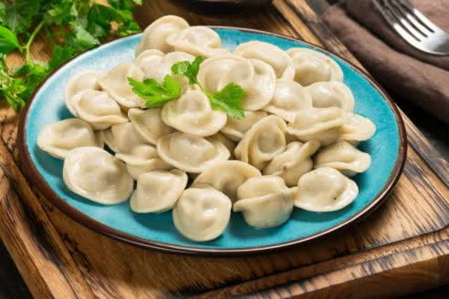

Сегодня вы узнаете с нашего сайта как правильно варить пельмени.
5 доказательств того что вы неправильно готовите пельмени и не только.. Секретные рецепты пельменей по секрету» он увидел с первой же страницы.
Наши персональные рецепты
- Мои секретные рецепты о готовке пельменей. Блог про кухню.
- Советы готовки
- Чистые ингредиенты и рецепты блюд
- Проверенные и достоверные
Отзывы
Спасибо за советы, теперь готовим вкусный завтрак для всей семьи
Наташа - Мама пяти детей